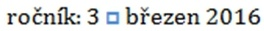
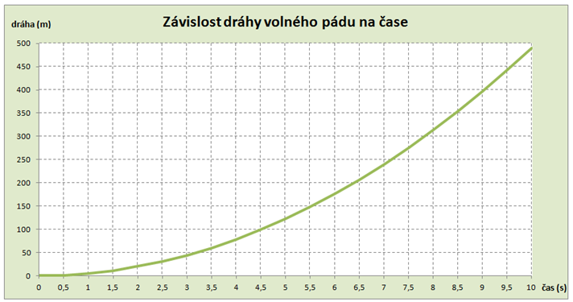

Úlohy můžete řešit v libovolném
pořadí a samozřejmě je nemusíte vyřešit všechny. Za úlohy můžete
dostat maximálně 119 bodů (55+47+17) – hodnotí se shoda se zadáním,
dodržení typografických zvyklostí a přehlednost výsledku.
Na řešení úloh máte 4 hodiny čistého
času.
Před zahájením soutěže vám pořadatel
oznámí, kam máte ukládat řešení úloh. Kompletní řešení každé úlohy
uložte do samostatného podadresáře nazvaného
jménem úlohy (např.
matfyzin).
Časopis MATFYZIN
max. 55 bodů
Pracujete jako grafik časopisu MATFYZIN. Vaším úkolem je z příspěvků různých autorů
vytvořit časopis podle předlohy v souboru časopis_matfyzin.pdf.
Příspěvky jsou uloženy ve složce úkol1_časopis a je třeba z nich odebrat hypertextové odkazy a opravit překlepy.
Formát časopisu:
- velikost strany A4
- zrcadlové okraje; vnitřní okraj 3 cm, vnější 2 cm
- základní text: font Cambria, velikost 12
- mezera za odstavcem: 12 bodů
- řádkování jednoduché
- zarovnání textu do bloku
- velikost písma nadpisu: 20 bodů
- je dodrženo pravidlo, že na konci řádku není jednopísmenková předložka
- na všech listech kromě prvního je v zápatí vloženo číslo stránky (pravý okraj) a text
3/2016 MATFYZIN (levý okraj)
UPŘESNĚNÍ K JEDNOTLIVÝM STRANÁM ČASOPISU
1. STRANA
Všimněte si znaku vloženého v textu: 
2. STRANA
Věnujte pozornost indexům, řeckému písmenu kapa, konstantě a vzorci. Nejsou ve zdrojovém
textu.
3. STRANA
Vložte poznámky pod čarou ke slovům LIGO a LISA.
Poznámka ke slovu LIGO: Interferometr pro hledání gravitačních vln
Poznámka ke slovu LISA: Připravovaný projekt pro detekci gravitačních vln
4. STRANA
Stránka je otočena na šířku
5. STRANA
Ze slova gravitace (první slovo odstavce na stránce) vytvořte hypertextový odkaz na: http://www.csfd.cz/film/275420-gravitace/prehled/
Věnujte pozornost číslům a vzorci v části Soutěžní úkol.
Výpočet tíhového zrychlení
max. 47 bodů
Honza se rozhodl změřit místní tíhové zrychlení g. Využil k tomu volného pádu.
Ze vztahu s = \frac{1}{2} \cdot g \cdot t^2 si odvodil, jak ho vypočítat. Vyšel mu tento vzorec: g = 2 \cdot \frac{s}{t^2}.
V tomto vzorci písmeno s znamená dráhu, kterou urazí těleso a písmeno t čas, tj. dobu pohybu tělesa.
Provedl 60 měření. Kuličku pouštěl z výšky 2 m, 3 m a 4 m. Výsledky měření si zapisoval
do sešitu. Při přepisování do poznámkového bloku v počítači si nedal pozor a měření
zapsal neuspořádaně. Každé měření zapsal na samostatný řádek ve tvaru výška mezera
čas.
- Importujte data ze souboru
data.txt do
tabulkového kalkulátoru. Pokud neumíte data importovat, pracujte se souborem
mereni.xlsx. (Soubory najdete ve složce úkol2/.)
- Vypočítejte tíhové zrychlení g pro každé měření. Vzorec pro výpočet zapište do dalšího sloupce v tabulce. Sloupec
nadepište „tíhové zrychlení“
pomůcka: t^2 = t*t, použijte závorky
- Vložte nový sloupec, ve kterém budou vypočítané hodnoty tíhového zrychlení g zaokrouhlené na 3 desetinná místa. Použijte k tomu vhodnou funkci (ne pouhé zobrazení
čísla).
- Vypočítejte průměr ze zaokrouhlených hodnot. (Kdo nemá zaokrouhlené, může počítat
z vypočítaných hodnot.) Vzorec vložte pod tabulku do příslušného sloupce.
- Vypočítejte odchylku každého měření. Odchylku zjistíte jako rozdíl mezi průměrnou
hodnotou zrychlení a vypočítaným zrychlením g pro každé měření.
- V našich zeměpisných šířkách je g = 9,81 ms^{-2}. Do dalšího sloupce vložte takový vzorec, který vypíše +, pokud je vypočítaná hodnota
větší než 9,81, v ostatních případech vypíše -.
- Do dalšího sloupce vložte takový vzorec, který vypíše text „přesné měření“, pokud
se vypočítaná hodnota nachází v intervalu hodnot 9,8 až 9,9. V ostatních případech
zůstane buňka prázdná.
- Ukotvěte příčku tak, aby při rolování zůstával zobrazen řádek s popiskem výška, čas,
atd.
- Určete pomocí vzorce, jaký největší čas Honza naměřil. Vložte jej pod tabulku do sloupce,
ve kterém je čas.
- Určete, při kolika pokusech tento největší čas naměřil. Použijte vzorec, nepočítejte
„ručně“! Výsledek vložte také pod tabulku.
- Pomocí podmíněného formátování (světle modrá barva výplně buňky) zvýrazněte všechna
měření s časem t < 0,65 \text{ s}.
- Zkopírujte na druhý list jen sloupce obsahující výsledky měření, tj. sloupce vyska
(m), cas (s).
- Přejmenujte listy. První list na 1. výpočet, druhý list na 2. seřazení.
Následující úkoly zpracovávejte na druhém listu.
- Seřaďte data podle údajů o výšce výšky a dále podle času vzestupně.
- Vypočítejte průměr času pro každou měřenou výšku zvlášť. K tomu si do tabulky vložte
volné řádky.
- Pro jednotlivé výšky vypočítejte tíhové zrychlení
g, vzorec vložte do řádku, ve kterém jsou
vypočítané průměry. K jeho výpočtu použijte již vypočítané
průměrné hodnoty času. Výsledek zobrazte na 2 desetinná
místa.
Následující úkol zpracovávejte na třetím listu
Třetí list pojmenujte 3. graf. Na tomto listu vytvořte graf podle následujícího zadání.
-
Graf závislosti dráhy volného pádu na čase.
Vstupní hodnoty umístěte do tabulky.
Tabulka bude zachycovat délku dráhy volného pádu pro časy od 0 sekund do 10 sekund
s krokem půl sekundy.
- Do prvního sloupce tabulky zapište časy.
- Do druhého sloupce tabulky vypočítejte dráhu volného pádu s = \frac{1}{2}
\cdot g \cdot t^2 (Pro výpočet použijte hodnotu g=9,81
ms^{-2}.)
- Do třetího sloupce zaokrouhlete výsledky na celé metry.
- Pro sestrojení grafu použijte zaokrouhlené hodnoty. (poznámka: nemáte-li zaokrouhleno,
sestrojte graf z vypočítaných hodnot)
- Sestrojte graf. Zformátujte ho podle předlohy.

Propagace časopisu
max. 17 bodů
Svůj časopis vytvořený v první úloze máte propagovat formou prezentace.
Vytvořte tedy prezentaci věnovanou článkům z časopisu.
- Informace čerpejte z materiálu pro úkol v textovém editoru
- V prezentaci informujte o třech článcích – každému článku jsou věnovány dva snímky
- Nepoužívejte žádný motiv (tj. předefinovaný vzhled prezentace), ale vytvořte si vlastní
grafický návrh, nejlépe s využitím předlohy snímku.
- Prezentaci zpracujte podle pravidel pro tvorbu prezentace
- Zvolte vhodně animace či přechody snímků
Obsah snímků:
1. snímek – úvodní snímek prezentace
2. snímek – obsahuje rozcestník tj. názvy článků, o kterých v prezentaci informujete.
Každý z těchto názvů je hypertextovým odkazem, který vede na snímek věnovaný danému
tématu.
3.–8. snímek – obsahují informace o článcích z časopisu. jeden článek = 2 snímky
Na každém jsou vložena dvě tlačítka (nebo tvary).
- První z nich odkazuje na 2. snímek, tj. na rozcestník
- Druhé tlačítko ukončí prezentaci
Na všechny snímky vložte zápatí a do něj své jméno.